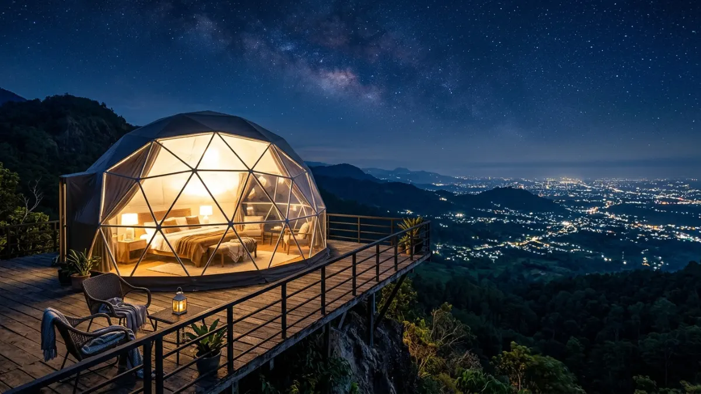
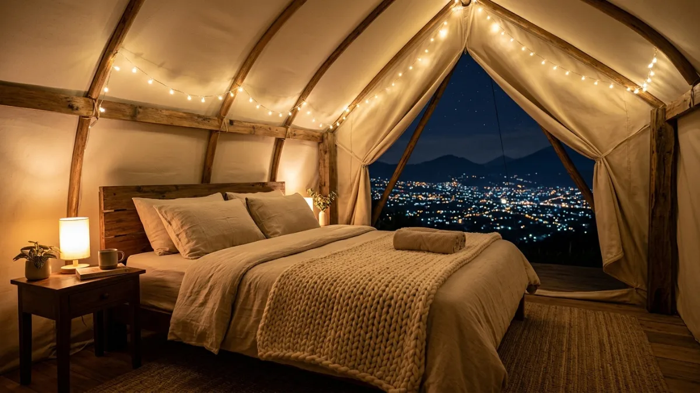

Glamping di Batu menawarkan kenyamanan menginap dengan panorama city light kota yang dramatis dari ketinggian.Glamping di Batu adalah pilihan terbaik untuk menikmati pemandangan city light kota dari ketinggian dengan fasilitas nyaman seperti kasur, selimut tebal, dan dekorasi tenda, tanpa perlu membawa perlengkapan camping sendiri.
- Apa Itu Glamping dan Apa Bedanya dengan Camping Biasa di Batu?
- Mengapa Glamping di Batu Menjadi Pilihan Populer untuk Menikmati City Light?
- Berapa Kisaran Harga Glamping di Batu?
- Apa yang Perlu Diperhatikan Saat Memilih Glamping di Batu?
- Glamping vs Camping Mandiri: Mana yang Lebih Tepat untuk Anda?
- FAQ
Apa Itu Glamping dan Apa Bedanya dengan Camping Biasa di Batu?
Glamping adalah singkatan dari glamorous camping, yaitu bentuk berkemah yang menawarkan kenyamanan setara penginapan dengan suasana alam terbuka.
Di Batu, glamping menjadi alternatif populer bagi wisatawan yang ingin menikmati city light tanpa harus menyiapkan perlengkapan camping sendiri.
Perbedaan utama glamping dan camping mandiri di Batu:
| Aspek | Glamping | Camping Mandiri |
|---|---|---|
| Perlengkapan | Disediakan pengelola | Bawa sendiri |
| Tipe akomodasi | Tenda permanen atau semi-permanen dengan kasur | Tenda portable standar |
| Fasilitas | Kasur, selimut, listrik, kadang kamar mandi | Terbatas, bergantung lokasi |
| Biaya | Lebih tinggi | Lebih rendah |
| Cocok untuk | Pemula, keluarga, pasangan | Penggemar alam berpengalaman |
Tren glamping di Indonesia tumbuh signifikan dalam beberapa tahun terakhir. Menurut laporan Kementerian Pariwisata dan Ekonomi Kreatif (Kemenparekraf) tahun 2024, permintaan glamping di destinasi alam Jawa tumbuh lebih dari 45 persen dibandingkan periode 2021-2022, dengan Kota Batu menjadi salah satu titik konsentrasi pertumbuhan tertinggi.
Mengapa Glamping di Batu Menjadi Pilihan Populer untuk Menikmati City Light?
Glamping di Batu populer karena menggabungkan kenyamanan menginap dengan panorama city light kota yang dramatis, tanpa memerlukan keahlian teknis camping atau perlengkapan khusus.
Bagi banyak wisatawan, hambatan utama untuk menikmati camping city light di Batu bukan soal minat, melainkan soal kerumitan teknis: tidak punya tenda, tidak terbiasa tidur di luar, tidak tahu cara mendirikan tenda. Glamping menyelesaikan semua hambatan tersebut.
Selain itu, glamping di Batu sering dilengkapi dengan:
- Dekorasi tenda yang estetis dan fotogenik
- Pencahayaan hangat di dalam tenda
- Fasilitas sarapan atau paket makan malam
- Area duduk outdoor untuk menikmati pemandangan
- Kamar mandi dengan air hangat di beberapa properti

Glamping di Batu menawarkan suasana romantis dengan dekorasi tenda yang estetis dan pemandangan city light yang memukau.Berapa Kisaran Harga Glamping di Batu?
Harga glamping di Batu bervariasi antara Rp250.000 hingga Rp800.000 per malam per tenda, tergantung lokasi, fasilitas, dan musim kunjungan.
Secara umum, kategori harga glamping di Batu adalah:
- Glamping standar: Rp250.000 - Rp400.000 per malam. Fasilitas dasar: kasur, selimut, tenda permanen, listrik terbatas.
- Glamping menengah: Rp400.000 - Rp600.000 per malam. Tambahan: kamar mandi pribadi atau bersama yang lebih baik, dekorasi lebih lengkap, akses sarapan.
- Glamping premium: Rp600.000 - Rp800.000 ke atas per malam. Fasilitas hotel dalam format glamping: kasur berkualitas, kamar mandi dalam, pemanas ruangan, dekorasi premium.
Harga di atas adalah estimasi umum dan dapat berubah sesuai kebijakan masing-masing pengelola. Harga juga sering meningkat saat akhir pekan, hari libur nasional, dan musim liburan sekolah.
Apa yang Perlu Diperhatikan Saat Memilih Glamping di Batu?
Pilih glamping di Batu dengan mempertimbangkan orientasi pemandangan, fasilitas yang disediakan, ulasan dari tamu sebelumnya, dan kebijakan pembatalan.
Lima hal yang wajib dicek sebelum memesan glamping di Batu:
1. Orientasi pemandangan. Tidak semua glamping di Batu memiliki pemandangan city light yang baik. Konfirmasi kepada pengelola apakah tenda menghadap ke arah kota, terutama untuk kunjungan malam hari.
2. Fasilitas yang termasuk dalam harga. Tanyakan secara spesifik apa yang termasuk dalam paket: apakah sarapan termasuk, apakah ada kamar mandi, apakah ada listrik dan colokan.
3. Ulasan wisatawan. Baca ulasan dari Google Maps, TripAdvisor, atau media sosial untuk mendapatkan gambaran nyata tentang kondisi terkini properti.
4. Kebijakan pembatalan. Tanyakan tentang kebijakan pembatalan atau reschedule, terutama jika ada kemungkinan perubahan cuaca yang memaksa Anda membatalkan rencana.
5. Aksesibilitas lokasi. Konfirmasi apakah lokasi dapat diakses dengan kendaraan biasa atau memerlukan kendaraan khusus.
Glamping vs Camping Mandiri: Mana yang Lebih Tepat untuk Anda?
Pilih glamping jika Anda pemula, mengutamakan kenyamanan, atau berkunjung bersama anak-anak. Pilih camping mandiri jika Anda berpengalaman, mengutamakan autentisitas, dan ingin menghemat biaya.
Panduan singkat memilih:
Glamping lebih cocok:
- Pertama kali camping
- Bersama pasangan untuk suasana romantis
- Membawa anak kecil
- Tidak memiliki perlengkapan camping
- Menginginkan foto estetis
Camping mandiri lebih cocok:
- Sudah terbiasa berkemah
- Memiliki perlengkapan lengkap
- Berkunjung dalam kelompok besar
- Memprioritaskan penghematan biaya
Glamping di Batu adalah solusi ideal bagi wisatawan yang ingin menikmati pengalaman camping city light tanpa kerumitan teknis berkemah.
Dengan fasilitas yang nyaman, suasana yang romantis, dan pemandangan kerlap-kerlip kota dari ketinggian, glamping menjadi pilihan yang semakin diminati.
Pastikan memilih properti glamping yang terpercaya, dengan orientasi pemandangan yang sesuai, dan memesan jauh-jauh hari untuk mendapatkan pilihan terbaik.
FAQ
1. Apakah glamping di Batu selalu memiliki pemandangan city light?
Tidak semua. Beberapa glamping di Batu memang dirancang untuk menikmati city light, namun ada juga yang lebih fokus pada pemandangan alam pegunungan atau perkebunan. Konfirmasi kepada pengelola sebelum memesan.
2. Seberapa jauh glamping di Batu dari pusat kota?
Mayoritas glamping dengan pemandangan city light di Batu terletak 5-15 kilometer dari pusat kota, di area perbukitan sekitar Batu. Waktu tempuh umumnya 15-30 menit dari pusat kota tergantung kondisi jalan.
3. Apakah glamping di Batu bisa dipesan secara online?
Banyak glamping di Batu sudah dapat dipesan melalui platform pemesanan akomodasi online maupun langsung melalui media sosial atau WhatsApp pengelola. Pesan minimal 3-7 hari sebelumnya untuk akhir pekan agar tidak kehabisan.